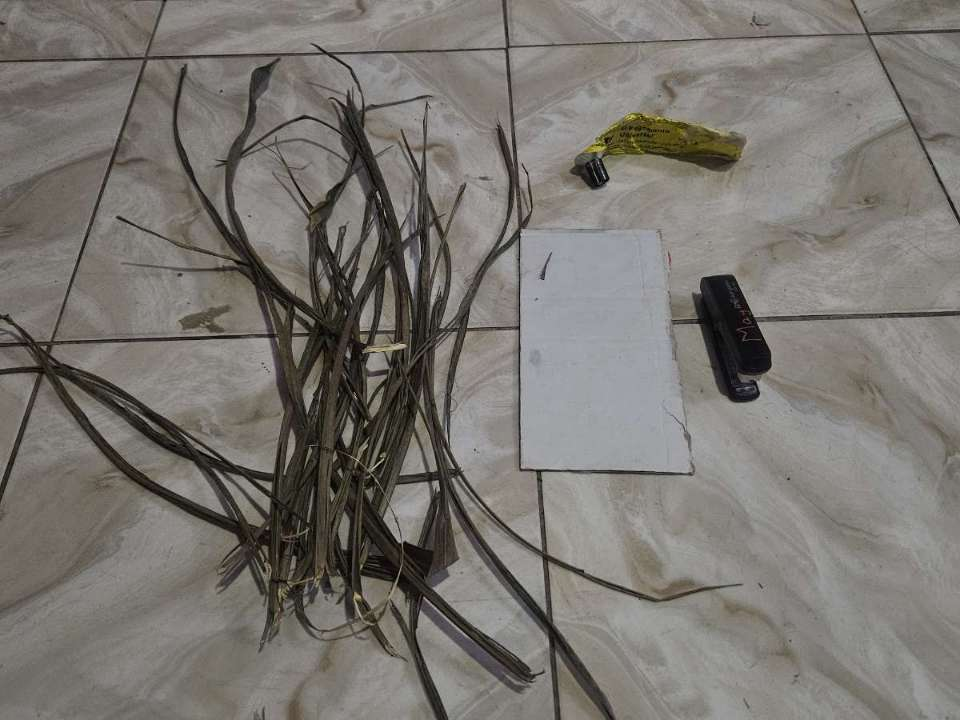
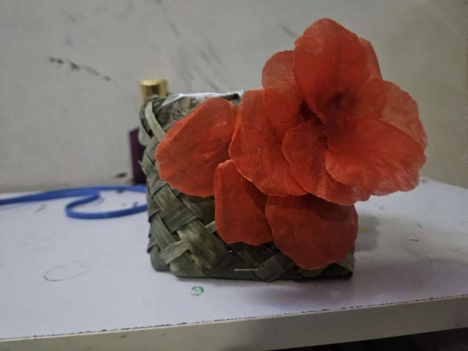

This page is about the materials before they were transformed from a bunch of materials to one beautiful masterpiece and the uses.
These are the materials used:

These are our materials
To buy it click here
You might be wondering how did the final work look? How did they do it? Look over here


This is our final destination in the making of our vase